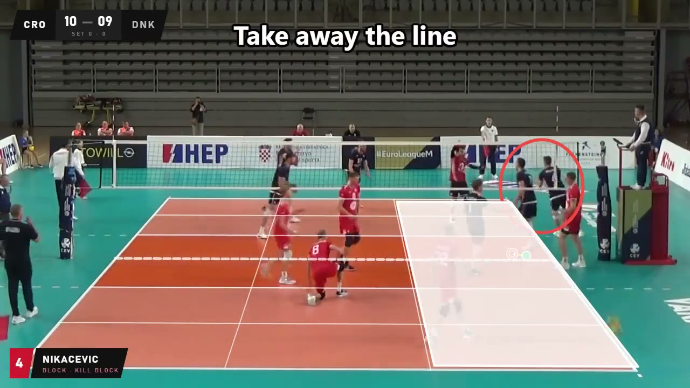
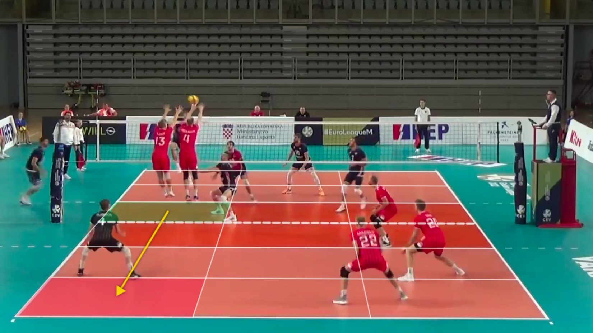
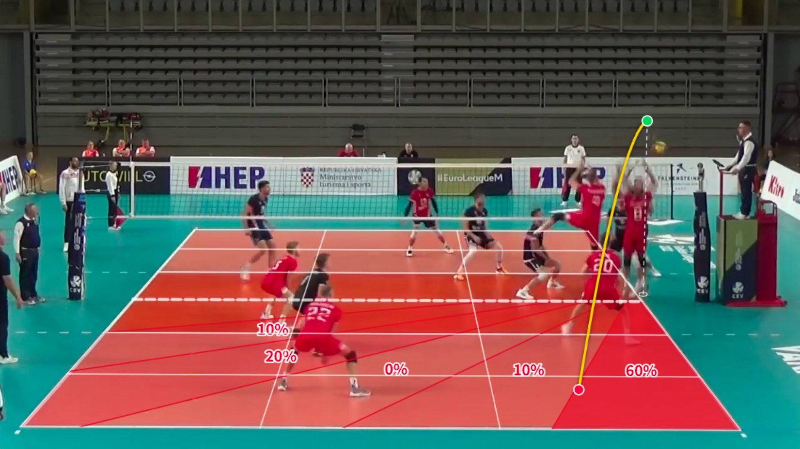
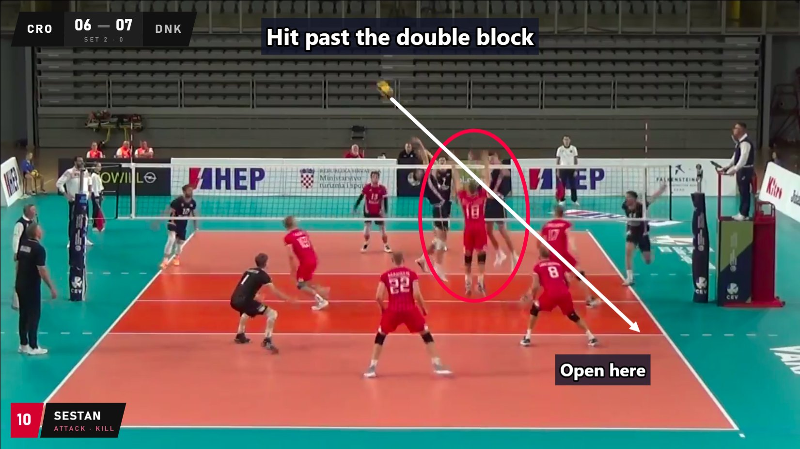
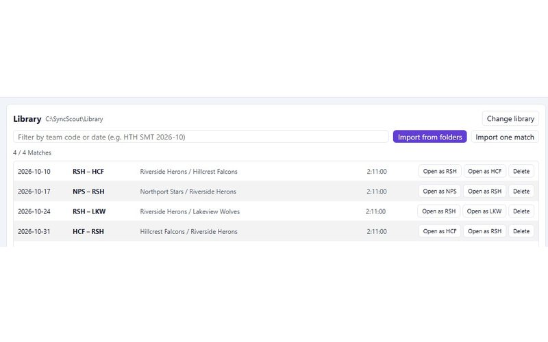
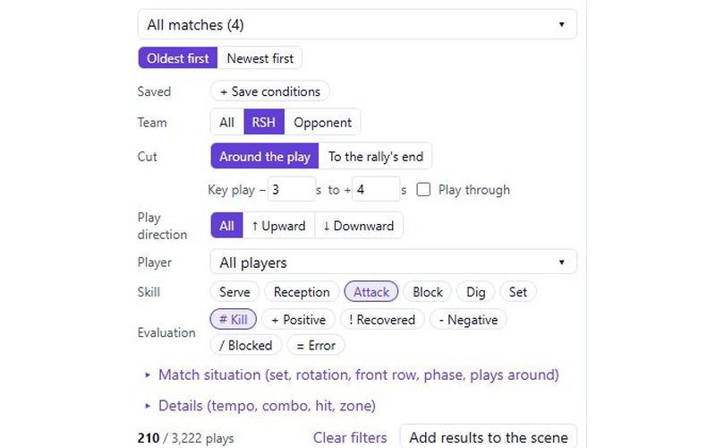
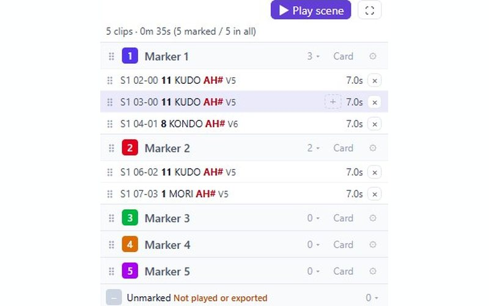
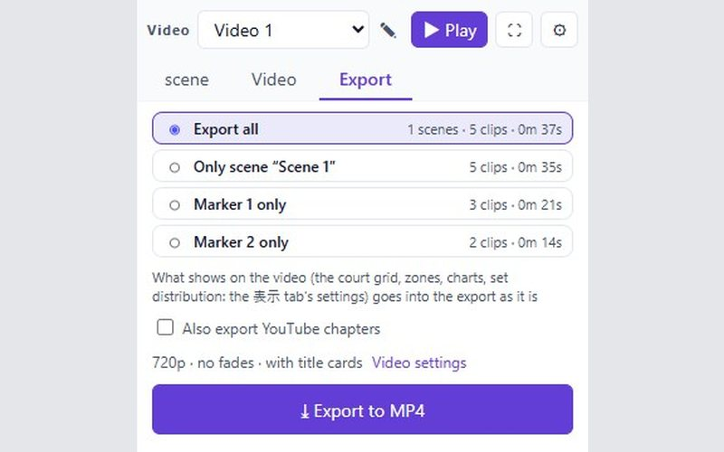
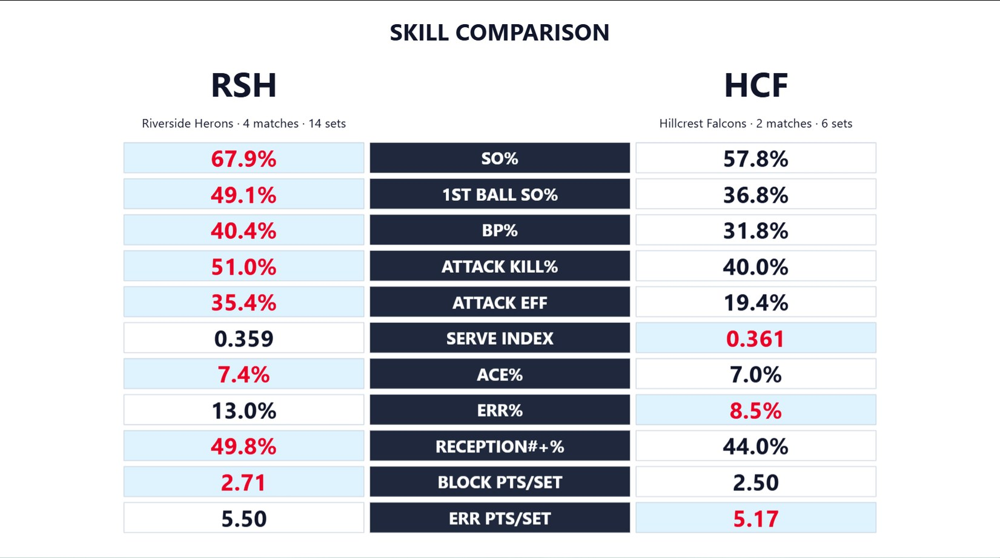

- 1Reads the videoA frame of your match.
- 2Finds the courtFour corners, then the lines.
- 3Draws your dataScore, captions, points. Then your message.
Let the data draw on the court.
Open a match and the app finds the court and fits it to the lines. Your scout data then sits on the floor of the video as scores, captions, contact points and flights.





Flights are drawn from the scout's points to explain the play, so they won't follow the real ball exactly.
Say it on the video, not after it.
Type a headline, circle the block, point at the open court. What you see is what goes into the MP4.

Easy enough to do every week.

LoadPoint at a folder; videos and .dvw / .vsm files pair up.
FindFilter every match by player, skill, rotation or zone.
BuildOne key sends a play to a scene. A preset makes the whole video.
ShowExport to MP4, PDF or PowerPoint.
From the numbers to the video, and to slides.
Click a number in a report and the play list shows just those plays. Pick a team and the app draws slides of its rotations and set distribution.




One team, one price.
One subscription covers SyncScout and Video Editor for the whole team. Teams already on SyncScout pay nothing extra.
-
Free trial
30 days
No card needed
- Every feature, exports included
- Start it by signing in from the app
-
Monthly
$5 / month
One team, any number of people
- SyncScout and Video Editor
- Cancel any time
-
Yearly Save 20%
$48 / year
The first 14 days are free
- Everything in monthly
- Paid once a year
Trial, cancelling and payment
One trial per account. Without signing in, the library holds one match and nothing can be exported. If a trial or plan ends, your projects still open and can be edited, but importing, new projects and exports wait for a plan. You choose a plan in the app, and payment opens in your browser. Prices are in US dollars; tax is worked out at checkout from where you are. Payments are handled by Stripe Managed Payments.
Try it with your own video and scout file
Free for 30 days.
Not sure which Mac you have? In the Apple menu, choose About This Mac: a chip named Apple M… is Apple silicon, a processor named Intel is Intel.
Windows: if “Windows protected your PC” appears
The app is not signed with a paid certificate, so the first time Windows may stop the installer. Click More info, then Run anyway. This is only once: later versions update inside the app.
Mac: install from Terminal, with no security prompt
The app is not signed by Apple. Opened from a download in the browser, macOS stops it the first time: then go to System Settings, Privacy & Security, and click Open Anyway. To skip that, open Terminal (in Applications, Utilities), paste this line and press Return. It downloads the latest version for your Mac from the same release, puts it in Applications and opens it.
cd /tmp && a=$(uname -m | sed s/x86_64/x64/) && u=$(curl -fsSL https://api.github.com/repos/courtendvb/syncscout-video-editor-releases/releases/latest | grep -o "https://[^\"]*-$a-mac.zip") && curl -fL "$u" -o ssve.zip && rm -rf ssve && ditto -x -k ssve.zip ssve && rm -rf "/Applications/SyncScout Video Editor.app" && mv "ssve/SyncScout Video Editor.app" /Applications/ && open "/Applications/SyncScout Video Editor.app"New versions download inside the app and install on restart, on Windows and on Mac (with the app in Applications).